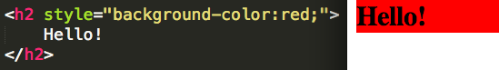
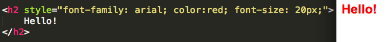
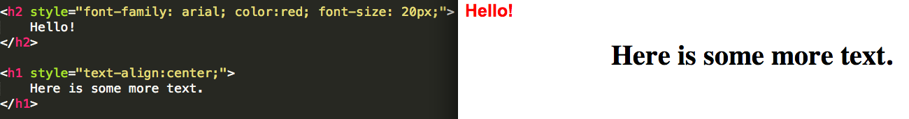

Basic Styling
An inline style can be used if a unique style is to be applied to one single occurrence of an element.
Background Color- You can change the background color of an element by adding an attribute like the example below to any element.

This changes all the space that accompanies an element of text. Multiple changes can be made to your text.
Font, Text Color, and Size his can be changed by adding the correct attributes to the opening tag of an element.

This helps in giving your web document a whole new and unique style and creates personalization.
Horizontal Alignment of Text- You can change the horizontal alignment of the text by adding the corresponding attribute to the opening tag of text such as

You will find out soon when you reach CSS that you can do this but with a whole lot less code.